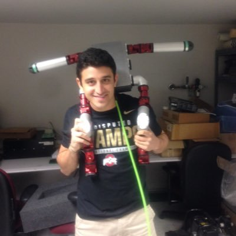
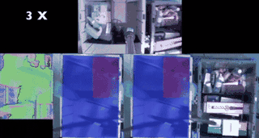
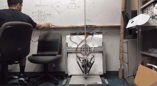
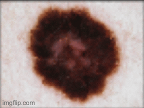
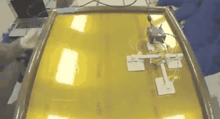

Simon Kalouche

Founder and CEO of Nimble. Nimble builds autonomous industries powered by industry-generalist superhumanoids.
Nimble has developed the world's first general-purpose warehouse superhumanoid capable of performing all core warehouse tasks including storage, retrieval, picking, packing and sorting.
Prior to Nimble I was a PhD student at Stanford's Vision and Learning Lab (SVL) advised by Dr. Fei-Fei Li commonly referred to as the “god-mother of AI”. I graduated with a Masters in Robotics from Carnegie Mellon’s Robotics Institute and a B.S. from The Ohio State University. I've developed robots for inspection of the International Space Station at NASA’s Jet Propulsion Lab, legged robots with agile running and jumping capabilities for the Department of Defense and an autonomous off-road special ops vehicle for the Air Force Research Lab.
Google Scholar
YouTube
LinkedIn
Twitter
email: kalouche at cs.stanford.edu
Publications

Nimble AI: Pick, Densely Pack and Handle Millions of Items with Autonomous Gripper Swapping using Vision Transformer Foundation Models
Simon Kalouche
2023

GOAT: A Quasi-Direct Drive Legged Robot with 3D Agility and Virtual Compliance
Simon Kalouche
IEEE/RSJ International Conference on Intelligent Robots and Systems (IROS), 2017

Design for 3D Agility and Virtual Compliance Using Proprioceptive Force Control in Dynamic Legged Robots
Simon Kalouche
Master’s Thesis, CMU Robotics Institute, 2016

Vision-Based Classification of Skin Cancer using Deep Learning
Simon Kalouche
2016

Modularity for Maximum Mobility and Manipulation: Control of a Reconfigurable Legged Robot with Series-Elastic Actuators
Simon Kalouche, D. Rollinson, H. Choset
IEEE Safety, Security, and Rescue Robotics (SSRR), 2015
★ Best Applied Paper Award ★

Vision Based Retail Store Check Out and Inventory Tracking
Simon Kalouche, A. Selevan
Internet of Things, 2015

Inchworm style gecko adhesive climbing robot
Simon Kalouche, N. Wiltse, H. J. Su, A. Parness
IEEE/RSJ International Conference on Intelligent Robots and Systems (IROS), 2014

Gyroscopic stabilization of an unmanned bicycle
H. Yetkin, Simon Kalouche, M. Vernier, G. Colvin, K. Redmill, U. Ozguner
American Control Conference (ACC), 2014
Misc
- 2024Ohio State’s Texnikoi Outstanding Alumni Award
- 2021Forbes 30 under 30 Award
- 2017Stanford StartX Alumni
- 2015National Defense Science and Engineering Graduate (NDSEG) Fellow
- 1st place in Carnegie Mellon’s Mechatronics Competition
- IEEE SSRR Best Applied Paper Award
- James R. Swartz Entrepreneurial Fellow
- 2014Ohio State’s Outstanding Research Award
- Ohio State's Denman Undergraduate Research Forum - 1st Place
- NASA Space Grant Fellow
Research featured in the WSJ, Forbes, Tech Crunch, IEEE Spectrum, The Verge, Wired, and Modern Material Handling.
Nimble
Nimble builds autonomous industries using industry-generalist superhumanoids powered by our general-purpose robot AI.
Nimble's first superhumanoid is an intelligent general-purpose warehouse robot – the first robot in the world capable of performing all core warehouse tasks including storage, retrieval, picking, packing and sorting.
nimble.ai